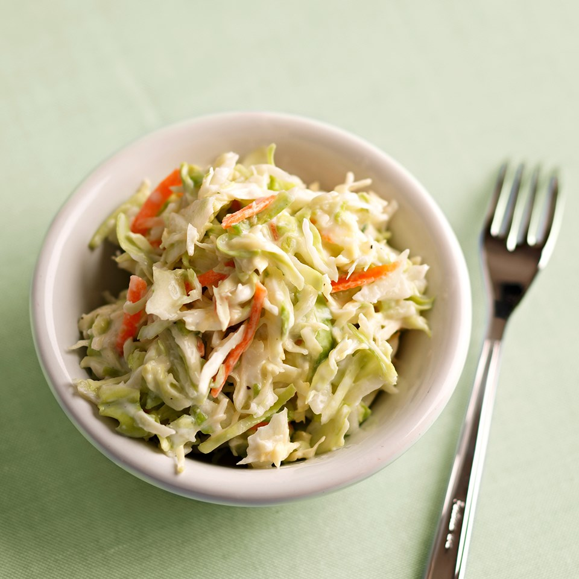
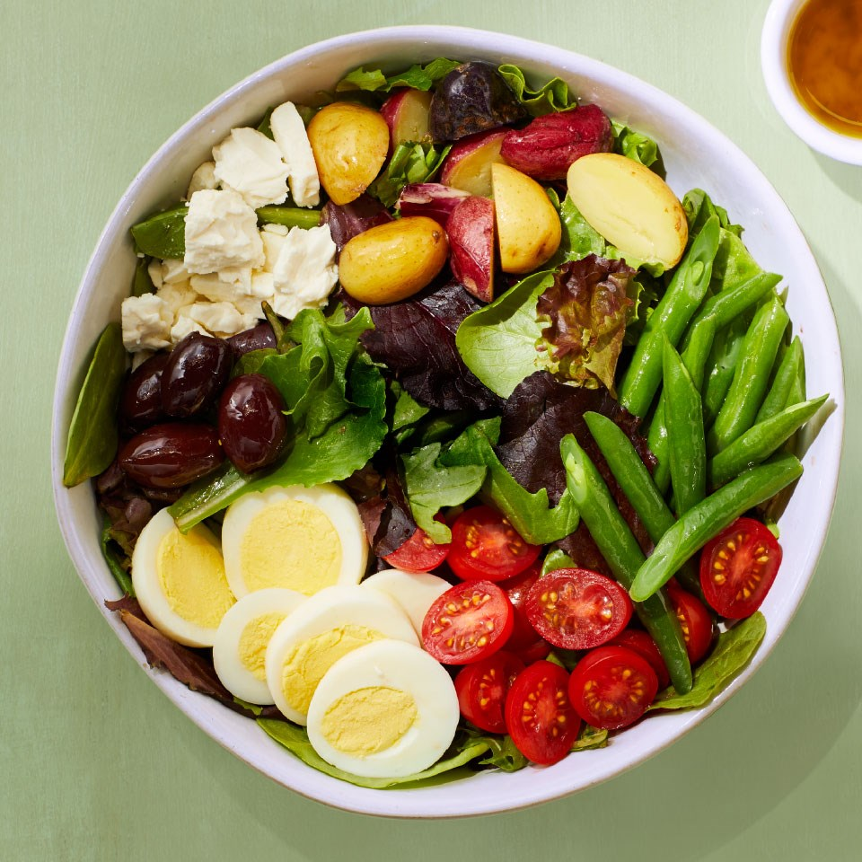

Japanese Cucumber Salad This Japanese-inspired cool, crisp salad is as elegant and well balanced as it is simple.
 Caraway Coleslaw Low-fat yogurt and light sour cream make this caraway-flavored coleslaw creamy and rich. It's a low-carb side dish that's ideal for a diabetic meal plan.
 Vegetarian Niçoise Salad This vegetarian take on a traditional Niçoise salad omits the fish and piles on plenty of vegetables.